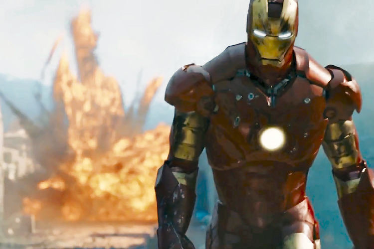
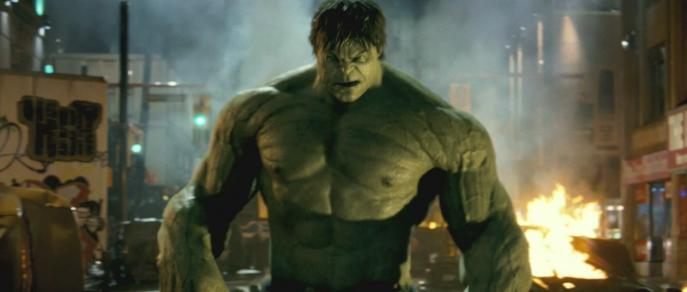

-
Iron Man (May 1, 2008)
This is the beginning of the MCU, Marvel Cinematic Universe. Robert Downey Jr. plays a lead role as Tony Stark. Tony Stark the son of legendary inventor and weapons contractor Howard Stark. When Tony Stark is assigned to give a weapons presentation to an Iraqi unit led by Lt. Col. James Rhodes, he's given a ride on enemy lines. That ride ends badly when Stark's Humvee that he's riding in is attacked by enemy combatants. He survives - barely - with a chest full of shrapnel and a car battery attached to his heart. In order to survive he comes up with a way to miniaturize the battery and figures out that the battery can power something else. While escaping the cave he was helped by Dr. Ho Yinsen and dies. He told Tony not to waste his life. Thus Iron Man is born.
Along with Tony Stark we can see few characters such as Happy Hogan, Pepper Potts and Agent Phil Coulson are seen in this movie. Also Nick Fury, the director of S.H.I.E.L.D is introduced in this movie.
Trailer Here -
The Incredible Hulk (June 20, 2008)
Scientist Bruce Banner (Edward Norton) desperately seeks a cure for the gamma radiation that contaminated his cells and turned him into The Hulk. Cut off from his true love Betty Ross (Liv Tyler) and forced to hide from his nemesis, Gen. Thunderbolt Ross (William Hurt), Banner soon comes face-to-face with a new threat: a supremely powerful enemy known as The Abomination (Tim Roth).
Trailer Here -
Iron Man 2 (May 7, 2010)
With the world now aware that he is Iron Man, billionaire inventor Tony Stark (Robert Downey Jr.) faces pressure from all sides to share his technology with the military. He is reluctant to divulge the secrets of his armored suit, fearing the information will fall into the wrong hands. With Pepper Potts (Gwyneth Paltrow) and "Rhodey" Rhodes (Don Cheadle) by his side, Tony must forge new alliances and confront a powerful new enemy, The Whiplash.
characters like Natasha Romanoff a.k.a Black Widow, Justin Hammer are introduced in this movie
Trailer Here
Oh! also you can see a cameo of Elon Musk in the movie. -
Thor (April 29, 2011)

The epic adventure "Thor" spans the Marvel Universe from present day Earth to the realm of Asgard. At the center of the story is The Mighty Thor, a powerful but arrogant warrior whose reckless actions reignite an ancient war. Thor is cast down to Earth and forced to live among humans as punishment. Once here, Thor learns what it takes to be a true hero when the most dangerous villain of his world sends the darkest forces of Asgard to invade Earth.
Important characters like Clint Barton a.k.a Hawkeye, Darcy Lewis, Erik Selvig, Loki, Odin, Frigga, Sif, Volstagg, Hogun, Fandral, Heimdall, Laufey, Destroyer are introduced in this movie.
Trailer Here -
Captain America: The First Avenger (July 29, 2011)

It is 1941 and the world is in the throes of war. Steve Rogers (Chris Evans) wants to do his part and join America's armed forces, but the military rejects him because of his small stature. Finally, Steve gets his chance when he is accepted into an experimental program that turns him into a supersoldier called Captain America. Joining forces with Bucky Barnes (Sebastian Stan) and Peggy Carter (Hayley Atwell), Captain America leads the fight against the Nazi-backed HYDRA organization.
Trailer Here -
The Avengers (April 27, 2012)

When Thor's evil brother, Loki (Tom Hiddleston), gains access to the unlimited power of the energy cube called the Tesseract, Nick Fury (Samuel L. Jackson), director of S.H.I.E.L.D., initiates a superhero recruitment effort to defeat the unprecedented threat to Earth. Joining Fury's "dream team" are Iron Man (Robert Downey Jr.), Captain America (Chris Evans), the Hulk (Mark Ruffalo), Thor (Chris Hemsworth), the Black Widow (Scarlett Johansson) and Hawkeye (Jeremy Renner).
Trailer Here
Most important character THANOS is introduced int his film